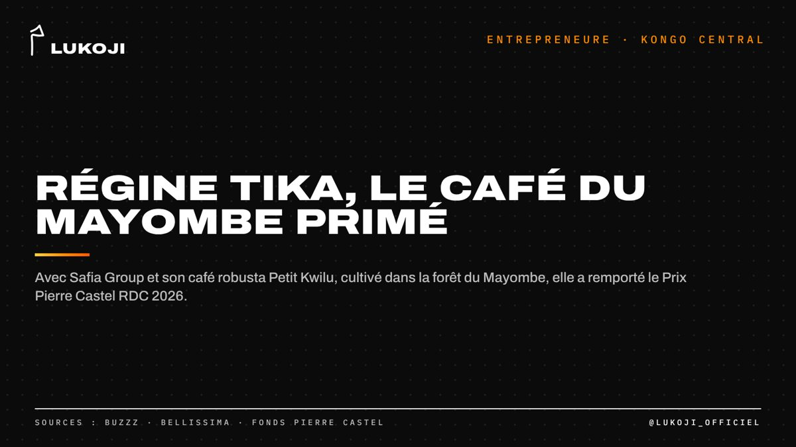
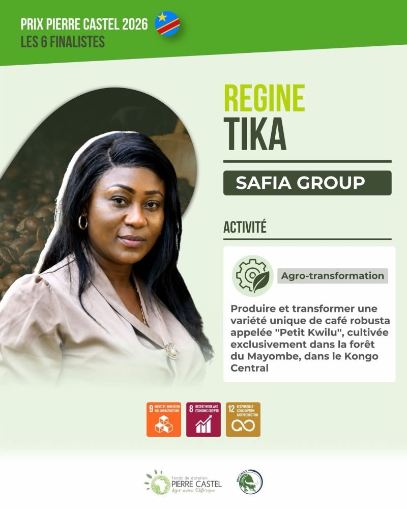
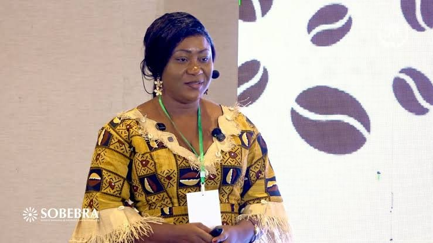
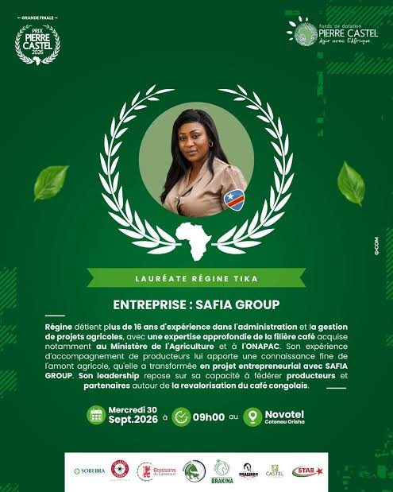

Régine Tika a fondé Safia Group et vend un café robusta cultivé dans la forêt du Mayombe, au Kongo Central. En 2026, elle a remporté le Prix Pierre Castel RDC, un concours qui récompense les entrepreneurs de l'agriculture et de l'agroalimentaire. Le 16 novembre, le magazine Buzzz l'a citée parmi les entrepreneurs congolais qui ont marqué l'année.
Ce qu'elle fait
Son produit s'appelle Café Safi 100 % Petit Kwilu. Le Petit Kwilu est une variété de café robusta, et le sien est cultivé exclusivement dans la forêt du Mayombe, selon Bellissima Magazine, qui a fait son portrait en août 2026.
Elle a choisi un produit précis, avec une origine précise : une variété, une forêt, une province. C'est ce qui permet de raconter le produit et de le distinguer d'un café vendu sans nom.

Le prix
Le Prix Pierre Castel est organisé par le Fonds Pierre Castel. Il récompense des entrepreneurs africains qui travaillent dans les filières agricoles et agroalimentaires. En RDC, l'appel à candidatures de l'édition 2026 a été relayé par la brasserie Bracongo.
Régine Tika fait partie des lauréats nationaux de 2026, avec Herman Mwembo, de Brasimba, distingué pour ses initiatives dans la chaîne de valeur agricole au Grand Katanga. Les lauréats nationaux représentent ensuite leur pays à une finale panafricaine.
Le 16 novembre, en faisant le bilan de l'année, Buzzz Magazine a classé Régine Tika parmi les entrepreneurs congolais qui ont marqué 2026.

Pourquoi ça compte pour un entrepreneur
Régine Tika ne vend pas « du café » : elle vend un café qui porte un nom, une variété et une région. Pour un client comme pour un jury, ces détails rendent le produit facile à reconnaître et à recommander.
Ce que tu peux en tirer
- Donne une origine à ton produit. D'où il vient, comment il est fait, par qui : c'est ce qui le rend différent.
- Présente-toi aux concours. Un prix apporte de l'argent, mais aussi de la visibilité et des contacts. Surveille les appels à candidatures de ton secteur.
- Raconte ton histoire. Un média qui parle de toi, c'est souvent parce que ton histoire est simple à raconter : un produit, un lieu, une personne.


Sources : Buzzz Magazine (16 novembre 2026), Bellissima Magazine (6 août 2026), Fonds Pierre Castel, Beto.cd (appel à candidatures relayé par Bracongo).
LUKOJI · Innover · Créer · Impacter